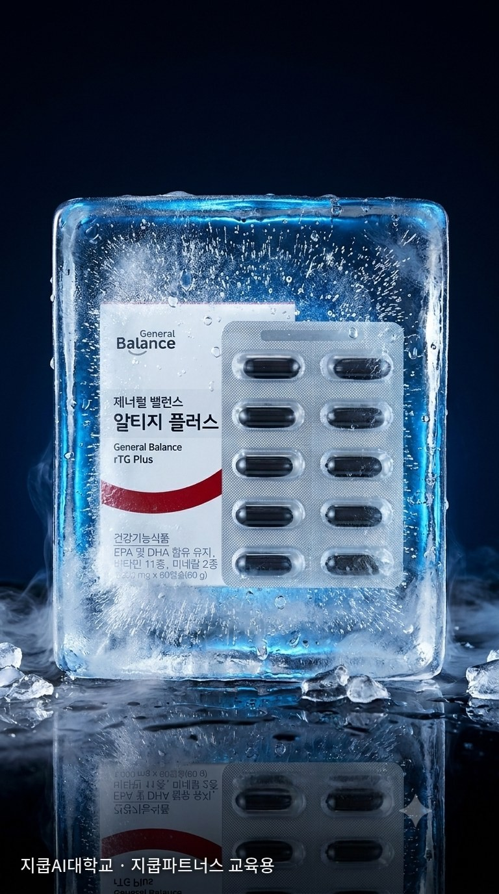

오늘의 프롬프트AI로사쌤 · 8번
얼음을 깨고 나오는 제품 광고 영상
제품 사진 한 장으로 광고 사진을 만들고, 그 사진으로 영상까지 만드는 두 단계예요. 어떤 제품이든 쓸 수 있어요.
1단계광고 사진 만들기

제미나이나 챗GPT에 내 제품 사진을 먼저 올리고, 아래 프롬프트를 붙여넣으세요.
업로드한 이미지 속 제품을 사용한 실사 고급 광고 사진. 제품은 형태, 비율, 색상, 라벨 디자인, 인쇄된 글자를 바꾸지 말고 다시 디자인하지 말 것.
장면: 제품 1개가 투명하고 커다란 얼음 블록 한가운데에 똑바로 선 채 갇혀 있음. 얼음 속에는 미세한 기포와 흰 결이 보이고 표면에는 하얀 서리와 물방울이 맺혀 있으며, 얼음 너머로 제품 라벨이 정면으로 또렷하게 비침. 얼음 블록은 물기가 얇게 깔린 검은 유광 바닥 위에 놓여 바닥에 반영이 생김. 주변에 작은 얼음 조각 몇 개와 차가운 냉기 안개.
조명과 구도: 어두운 남색 배경, 뒤에서 얼음을 투과하는 푸른 역광과 제품을 밝히는 부드러운 정면광, 정면 눈높이의 클로즈업, 제품이 화면 중앙에 크게.
고해상도 4K 실사, 얼음의 결과 기포·서리 결정·제품 라벨까지 선명하게, 사람과 손은 나오지 않음, 제품에 원래 있는 글자 외에는 글자·로고·워터마크 없음, 세로 9:16.
2단계광고 영상 만들기
1단계에서 만든 사진을 영상 도구에 첫 장면으로 올리고, 아래 프롬프트를 붙여넣으세요.
첫 프레임의 제품 형태, 색, 라벨, 인쇄된 글자를 끝까지 그대로 유지하고 일그러지거나 바뀌지 않게. 사람과 손은 나오지 않음.
0~3초: 얼음 블록 주위로 냉기 안개가 천천히 흐르고 표면의 물방울이 한 줄기 흘러내림. 카메라는 아주 천천히 다가감.
3~5초: 얼음 가운데에 가느다란 금이 쩍 하고 생기더니 사방으로 빠르게 번져 나감.
5~7초: 얼음이 바깥쪽으로 터지듯 산산이 깨지고, 얼음 조각과 물방울이 슬로모션으로 사방에 흩어짐.
7~10초: 깨진 얼음 사이에서 제품이 흠집 없이 우뚝 선 채 드러나고, 표면에 맺힌 물방울이 빛을 받아 반짝임. 카메라는 제품 앞에서 천천히 줌 인하며 라벨을 또렷하게 보여주고 마무리.
소리: 낮게 깔리는 냉기 소리, 얼음에 금 가는 날카로운 소리, 깨지는 순간의 묵직한 파열음, 이어지는 맑은 여운. 사람 목소리 없음.
4K 고해상도 실사 영상, 10초 원테이크, 얼음 파편의 움직임은 물리적으로 자연스럽게, 화면에 자막이나 새로운 글자·로고 없음.
출처 · AI로사쌤